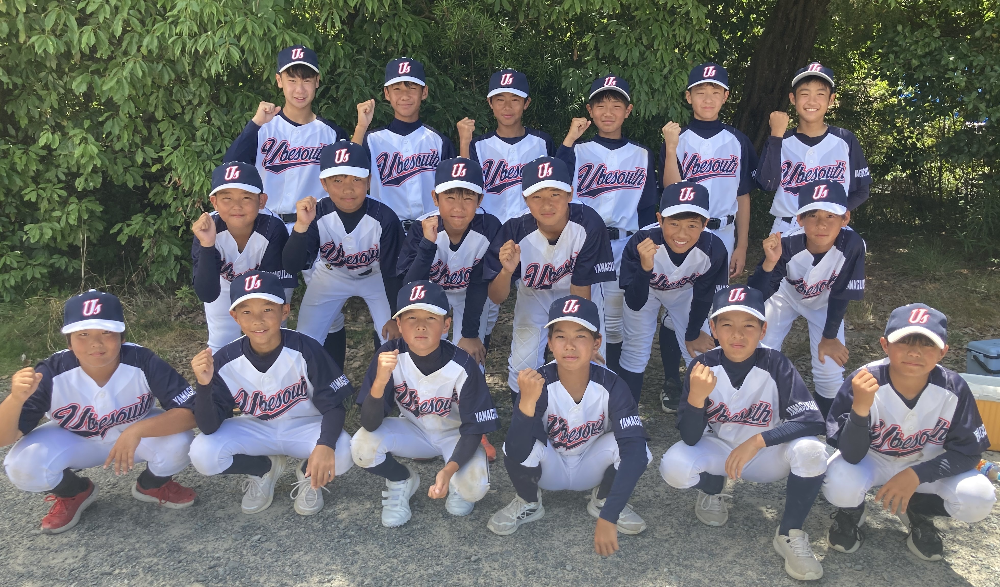

この度、令和7年4月に中学軟式野球チーム「宇部南ベースボールクラブ」を結成致しました。
今現在、宇部市の野球環境の衰退が進んでおり、私自身、宇部で生まれ宇部で育ち、野球を通じて人として成長させてもらい、たくさんの人に支えられて今の私があると思っております。
その野球で皆様の助けを借りながら、少しでも宇部市の野球を支えていければと思いこのチームを立ち上げました。
野球を通じて色々なことを学ばせる環境作り、将来ある子供達の成長を最大限いかせる場所にしていきたいと思っております。
宇部南ベースボールクラブ監督 梶矢 淳二